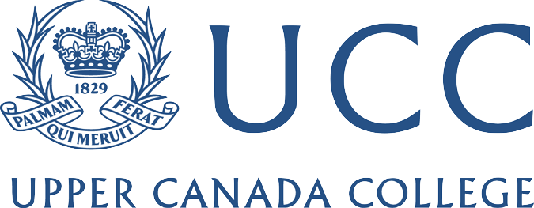
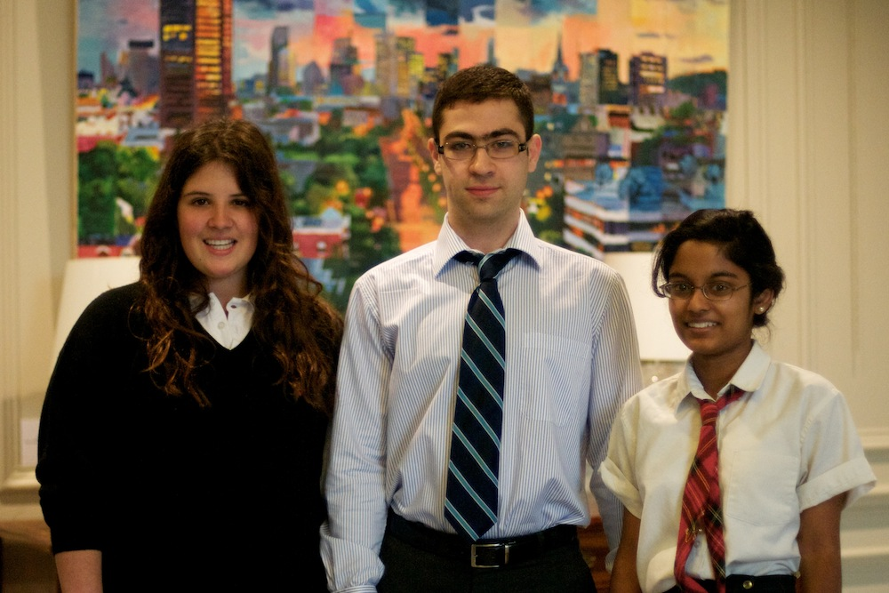

About the 2011 World Affairs Conference

|  |
Focused on a central theme, the annual two-day conference has discussed topics ranging from demographics, human rights, gender issues, justice and health ethics. This year’s conference will investigate a world of shrinking borders, specifically the ramifications of globalization.
Over the years, WAC has maintained its goal of broadening its participants’ horizons. Providing an accessible, educational and diverse environment, WAC continues to encourage delegates to explore issues beyond themselves and their communities. Students are truly at the centre of the conference, seeking elusive answers to hard-hitting questions. WAC provides essential exposure for students to global issues and debate.